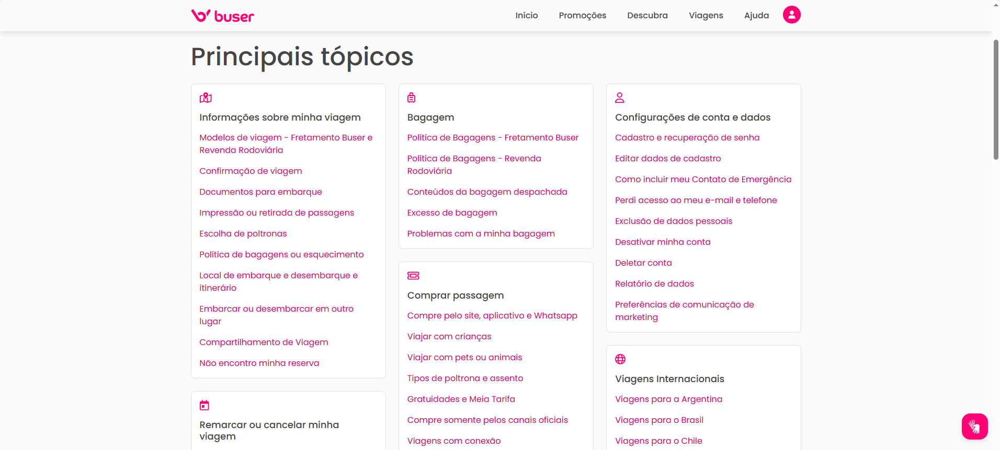

Altijd Beschikbaar, Altijd Klaar
Reizen volgt geen schema, en dat zou ondersteuning ook niet moeten doen. Of je nu een last-minute reis boekt om middernacht, een vertraging tegenkomt bij zonsopgang, of hulp nodig hebt bij het navigeren door de app tijdens je woon-werkverkeer, ons klantenserviceteam is 24 uur per dag, 7 dagen per week beschikbaar. Geen wachten, geen kantooruren—gewoon directe hulp wanneer je het het meest nodig hebt.
Onze toegewijde ondersteuningsspecialisten begrijpen dat elke reis belangrijk is. Van routeplanning tot real-time updates, van betalingsvragen tot boekingswijzigingen, wij zijn er om ervoor te zorgen dat je reiservaring naadloos verloopt. Met meertalige ondersteuning en een toewijding om problemen snel op te lossen, hebben we een systeem gebouwd dat jouw behoeften voorop stelt, ongeacht tijdzones of feestdagen.
Meerdere Kanalen, Eén Doel
Bereik ons op de manier die het beste voor jou werkt. Onze in-app chat verbindt je direct met een ondersteuningsagent, terwijl telefonische ondersteuning spraak-tot-spraak hulp biedt voor urgente zaken. E-mailondersteuning behandelt gedetailleerde vragen en documentatie, en ons social media team monitort platforms voor snelle reacties. Elk kanaal is 24/7 bemand, zodat je nooit alleen een reisuitdaging hoeft aan te gaan.
Voor veelgestelde vragen bieden onze uitgebreide FAQ-sectie en helpcentrum directe antwoorden. Maar wanneer je gepersonaliseerde hulp nodig hebt, is een echt persoon slechts een bericht verwijderd—geen bots, geen geautomatiseerde reacties die de nuance van jouw situatie missen. We geloven in menselijke verbinding, vooral wanneer je onderweg bent.

Proactieve Zorg & Real-Time Oplossingen
Geweldige ondersteuning is niet alleen reactief—het is proactief. Ons systeem monitort jouw boekingen en stuurt automatische updates over vertragingen, gatewijzigingen of routeaanpassingen. Als er iets misgaat, nemen we vaak contact op voordat je het zelf merkt, met oplossingen die al in gang zijn gezet. Deze proactieve aanpak betekent minder verrassingen en meer vertrouwen in jouw reisplannen.
Wanneer er problemen ontstaan, is ons team getraind om ze snel en eerlijk op te lossen. Of het nu gaat om een terugbetaling, een herboeking of compensatie voor ongemak, we behandelen elk geval met empathie en efficiëntie. Ons doel is niet alleen om problemen op te lossen—het is om potentiële frustraties om te zetten in positieve ervaringen die vertrouwen opbouwen.

Jouw Feedback Vormt Onze Service
Elke interactie is een kans om te verbeteren. We verzamelen en analyseren actief feedback van ondersteuningsinteracties, gebruiken inzichten om onze processen te verfijnen, onze kennisbank uit te breiden en ons team te trainen over opkomende reispatronen. Jouw stem beïnvloedt direct hoe we jou en duizenden andere reizigers bedienen.
Deze toewijding aan continue verbetering betekent dat onze ondersteuning meegroeit met jouw behoeften. Naarmate reistechnologie vordert en nieuwe uitdagingen ontstaan, passen we onze aanpak aan om voorop te blijven lopen. Het resultaat? Een ondersteuningservaring die in de loop van de tijd beter wordt, gebouwd op echte gesprekken en oprechte zorg voor jouw reis.
Waarom 24/7 Ondersteuning Belangrijk Is
- Gemoedsrust: Weet dat hulp beschikbaar is wanneer je het nodig hebt, wat reisangst vermindert en vertrouwen opbouwt in jouw plannen.
- Flexibiliteit: Boek, wijzig of annuleer reizen op jouw schema, niet het onze—ondersteuning past zich aan jouw leven aan.
- Betrouwbaarheid: Consistente beschikbaarheid betekent dat je op ons kunt rekenen tijdens noodsituaties, last-minute wijzigingen of onverwachte situaties.
- Wereldwijde Bereik: Of je nu lokaal of internationaal reist, ondersteuning is altijd toegankelijk, waardoor tijdzonebarrières worden doorbroken.
In het hart van uitzonderlijke reisservice staat uitzonderlijke ondersteuning. We zijn er niet alleen om vragen te beantwoorden—we zijn er om ervoor te zorgen dat elke reis die je maakt zo soepel en aangenaam mogelijk is. Omdat wanneer je ervoor kiest om met ons te reizen, je kiest voor een partner die toegewijd is aan jouw reis, elke stap van de weg, elk uur van de dag.